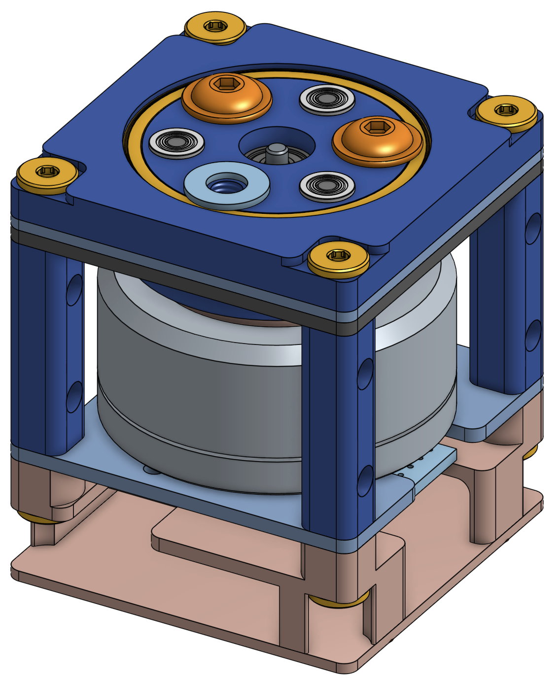
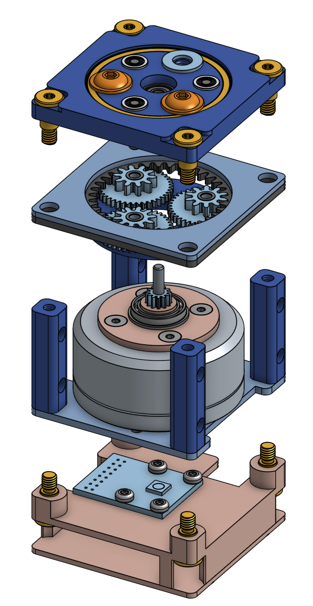

The spatial orientation of an end-effector such as a hand or a gripper is closely tied to its ability to perform a desired task [...] Yet both the academic and industrial research communities have tended to place more focus on hand/gripper development than that of wrist systems.
Recent prosthetics investigations, however, have shown that increased dexterity in wrist prostheses may contribute more to manipulation capacity than a highly dexterous terminal device with limited wrist capability. [1]

